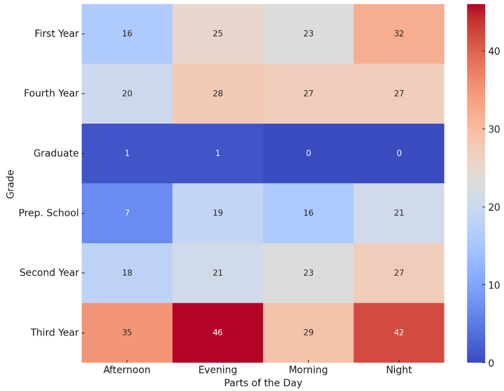
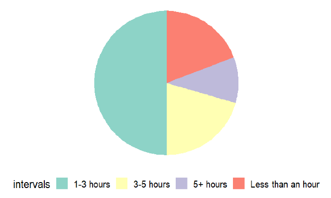
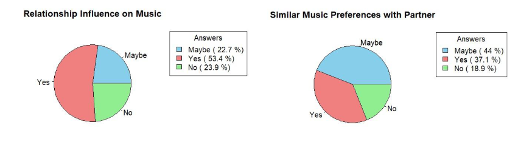

A face-to-face survey has been conducted among ODTÜ students about their music listening habits. The survey has provided some fascinating insights into the complex relationship between personal characteristics and music preferences. Firt, we found that Spofity is suprisingly more popular amont iOS users than Apple Music, suggesting that platform-spesific services may not be as important as previously believed. Our research also revelas a relationship between music prefernces and relationship status; singles prefer electronic music, while those in partnerships prefer R&B. Suprisingly, we were unable to find any connection between age and preferred music genres or between a person's preferred listening pattern during the day and their grades. Furthermore, our research indicates that there is no apparent gender difference in the music preferences in relationships. These results emphasize how different and unique people's tastes in music are, going beyond simple classification based on age, martial status, or other demographic variables. The data was mostly categorical so mainly used Chi-Square distribution and Fisher's Exact Test with various visualization techniques.
Below, some graphs about the analysis has shown.

Figure 1: Heathmap of listening preferences by grades.

Figure 2: Average music listening time.

Figure 3: Pie charts of relationship music preferences.